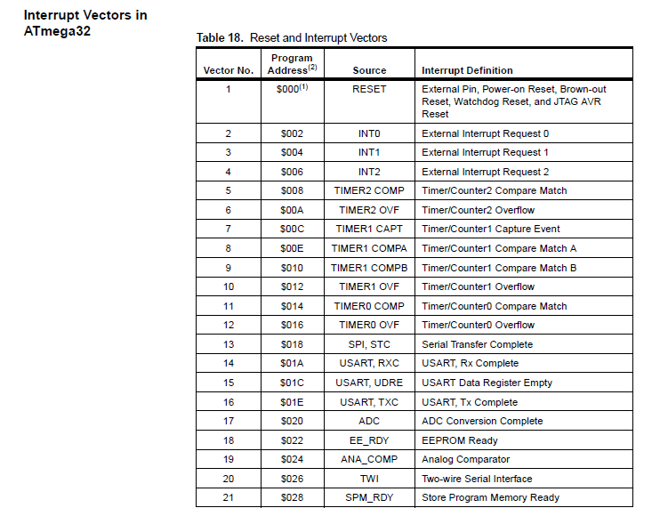

First thing is first We need to dicuss an important concept called System faults.
What causes System Faults/Exceptions !?
- Bus Fault
- Memory Faults
- Dividing by Zero
- Reset
Secondly there are Pereferal Exceptions that becomes priority for the
CPU to excute these are called INTERRUPTS.
For every Interrupt we need to define its handeler which is the
way(code) to handle the Interrupt this code is called
Interrupt Service Routine (ISR).
Now you must be wondering what is Difference between a normal function and an ISR!?
A normal function excutes within the code at a certain time but an ISR
runs wherever the code reached, it always takes the priority whenever
an interrupt condition happens.
we Can make any code in a serial process by using _ms_delay this
serial process is called blocking/polling yet the interrupt is a
parallel process and the controller is signal through the hardware.
Now lets ask a question, considering an inntrupt excutted and the ISR ran, will the code start running from the beginning again?!?!
The answer is ofcourse not, this would be a total waste of time but
the real question here is HOW??
Lets imagine that we want to take a capture for the CPU where its excuting an imaginary function called ADD() and all the general purpose registers are full of values and addresses and an interrupt command just came to the CPU telling it to leave everything and to excute the ISR so where will these values go, how will it handle the parallel process we were talking about??
- It will PUSH/Save the Context/values-inside-the-registers inside the frame of the function Add(), scuh that when the ISR finishes excution, the CPU would understand the place it should continue from again.
- The ISR code of the relevant interrupt will be inserted in the RAM Stack to be excuted and after its done it will be removed from the stack yet we didn't know where did the ISR came from, so lets hold on to this point and we will discuss it later.
- Now the CPU will POP the context out.
These Steps details the idea of a process called CONTEXT SWITCHING
The Interrupt sevice routines are normal functions saved in the ROM text partition with all the other functions yet their addresses are saved inside something called a Vector-Table, such that when an ISR is called inside the main function the CPU would understand which address to call the ISR text commands.
There is a hardware component that is called
Programmable Interrupt Controller, Its main job is to point out the addresses of the interrupts from
the Vector Table.
One Other Job for the PIC is to manage the Priority of the
Interrupts in case Many Interrupts happened at the same time, and it
manages it by the order of it inside the Vector table. And we can't
change the priorities in case of ATMEGA32, yet inside the ARM
Architecture the NVEC (Nested vector interrupt control), which is the
PIC inside the ARM architecture, we can controll the priorities
Through Nesting the Interrupts.
Interrupt Vector Table of ATMEGA32
To Enable the PIC It needs Three signals:
- GIE:General Interrupt Enable
- PIE:Pereferal Interrupt Enable
- FLAG:The Final Signal to call the ISR from the Vector table